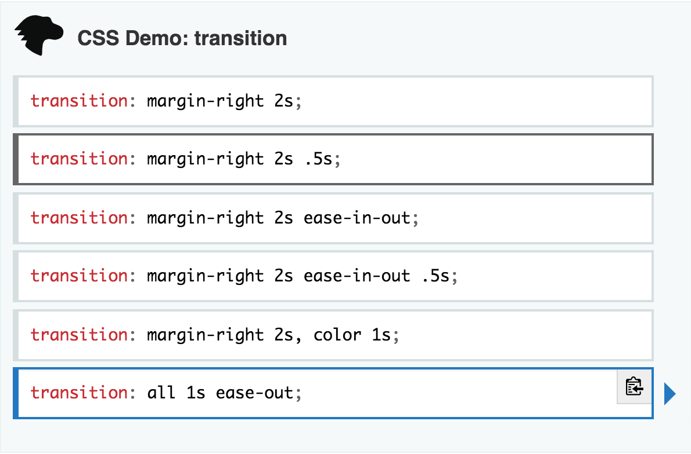

More DOM
Alex Hinds | @darkpurple141 | @al_hinds
Overview
windowbased storage- Leaning on CSS animation
- DOM Performance and Page Load
Background
- Modern concept
- Not Cookies!
- Cookies are used by the server to identify a client
- Storage is used by the client application for use in frontend

CSS Animations
Now you see me!
Further reading

https://developer.mozilla.org/en-US/docs/Web/CSS/transition
Performance Basics
Further reading